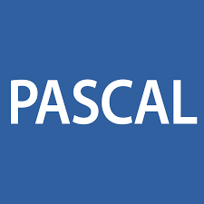
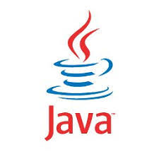
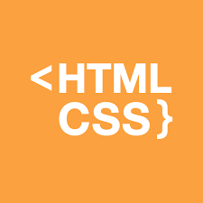

Мови програмування

Мова програмування Pascal була розроблена в 1968 році на кафедрі інформатики Стенфордського університету швейцарським вченим Нікласом Віртом, як засіб для навчання студентів програмуванню. Однак ця мова виявилась настільки вдалою, що досить швидко завоювала популярність серед програмістів і завдяки корпорації Borland International, яка в 1983 році перевела її на комерційну основу в якості мови програмування для персональних комп’ютерів, перетворилася в потужну сучасну професійну систему програмування, за допомогою якої можна вирішувати різноманітні задачі від розробки відносно простих обчислювальних програм, до створення складних реляційних систем управління базами даних. Вдале поєднання простоти мови з вражаючими можливостями призвело до появи потужних систем програмування на її основі, таких, як Turbo Pascal, Delphi. Особливо привабливою мову Pascal робить те, що на сьогодняшній день – це одна з небагатьох мов програмування, яка має розвинені засоби програмування для багатьох поширених сучасних операційних систем, що дозволяє досить легко переносити програми, написані на мові Pascal, до різних операційних систем. Перевагами мови Pascal є:
• Простий синтаксис мови. Невелика кількість базових понять. Програми на Паскалі досить легко читаються.
• Досить низькі апаратні та системні вимоги як самого компілятора, так і програм, написаних на Паскалі.
• Універсальність мови. Мова Паскаль застосована до рішення практично всіх задач програмування.
• Підтримка структурного програмування, програмування «згори-вниз», а також об'єктно-орієнтованого програмування. Pascal виявився дуже легким для вивчення й освоєння. Незважаючи на відносну простоту мови, вона виявилась придатною для дуже широкого спектру застосування, у тому числі для розробки дуже великих і складних програм, наприклад, операційних систем. Pascal дуже технологічний для реалізації практично усіх, у тому числі і нетрадиційних, машинних архітектур. Мова Pascal стандартизована в багатьох країнах, а у 1983 році було прийнято міжнародний стандарт. Turbo, а пізніше Borland Pascal — це одна з найвдаліших та найпоширеніших реалізацій мови Pascal, створена компанією Borland.
• Простий синтаксис мови. Невелика кількість базових понять. Програми на Паскалі досить легко читаються.
• Досить низькі апаратні та системні вимоги як самого компілятора, так і програм, написаних на Паскалі.
• Універсальність мови. Мова Паскаль застосована до рішення практично всіх задач програмування.
• Підтримка структурного програмування, програмування «згори-вниз», а також об'єктно-орієнтованого програмування. Pascal виявився дуже легким для вивчення й освоєння. Незважаючи на відносну простоту мови, вона виявилась придатною для дуже широкого спектру застосування, у тому числі для розробки дуже великих і складних програм, наприклад, операційних систем. Pascal дуже технологічний для реалізації практично усіх, у тому числі і нетрадиційних, машинних архітектур. Мова Pascal стандартизована в багатьох країнах, а у 1983 році було прийнято міжнародний стандарт. Turbo, а пізніше Borland Pascal — це одна з найвдаліших та найпоширеніших реалізацій мови Pascal, створена компанією Borland.

Мова C++ була розроблена Бьорном Страуструпом (Bjarne Stroustrup) в компанії Bell Laboratories (Нью-Джерсі), роком створення вважається 1979-й. Спочатку творець нової мови назвав її «С з класами», але в 1983 році це ім'я було змінене на C++. C++ повністю включає елементи мови С. Таким чином, С можна вважати фундаментом, на якому побудований C++. Більшість доповнень, які Страуструп вніс до С, були призначені для підтримки об'єктно-орієнтованого програмування.
По суті, C++ – це об'єктно-орієнтована версія мови С. Створюючи С++ на основі С Страуструп забезпечив плавний перехід багатьох програмістів на об'єктно-орієнтованє програмування. Замість необхідності вивчати абсолютно нову мову, С-програмістові досить було освоїти лише нові засоби, що дозволяють використовувати переваги об'єктно-орієнтованої методики. Впродовж 1980-х років C++ інтенсивно розвивалася і на початок 1990-х вже була готова для широкого використання.
Зростання її популярності носило вибухоподібний характер, і до кінця цього десятиліття вона стала найбільш використовуваною мовою програмування. В наші дні мова C++ як і раніше має безперечну перевагу при розробці високопродуктивних програм системного рівня.
Перевагами мови C++ є:
• Швидкодія. Швидкість роботи програм на С++ практично не поступається програмам на С, хоча програмісти отримали в свої руки нові можливості і нові засоби.
• Масштабованість. На мові C++ розробляють програми для найрізноманітніших платформ і систем.
• Можливість роботи на низькому рівні з пам'яттю, адресами, портами. (що, при необережному використанні, може легко перетворитися на недолік.)
• Можливість створення узагальнених алгоритмів для різних типів даних, їхня спеціалізація, і обчислення на етапі компіляції, з використанням шаблонів.
• Підтримуються різні стилі та технології програмування, включаючи традиційне об'єктно-орієнтованє програмування, узагальнене програмування, метапрограмування (шаблони, макроси).
Недоліками мови C++ є:
• Наявність безліч можливостей, що порушують принципи типобезпеки та приводить до того, що в С++ програми може легко закрастися важковловима помилка. Більшість проблем типобезпеки С++ успадкована від С, але важливу роль в цьому питанні грає і відмова автора мови від ідеї використовувати автоматичне управління пам'яттю (наприклад, збірку сміття). Так візитною карткою С++ стали вразливості типу «переповнювання буфера».
• Погана підтримка модульності.
• Недостача інформації про типи даних під час компіляції.
• Мова C++ є складною для вивчення і для компіляції.
• В мові C++ відсутня підтримка функціонального програмування.
Перевагами мови C++ є:
• Швидкодія. Швидкість роботи програм на С++ практично не поступається програмам на С, хоча програмісти отримали в свої руки нові можливості і нові засоби.
• Масштабованість. На мові C++ розробляють програми для найрізноманітніших платформ і систем.
• Можливість роботи на низькому рівні з пам'яттю, адресами, портами. (що, при необережному використанні, може легко перетворитися на недолік.)
• Можливість створення узагальнених алгоритмів для різних типів даних, їхня спеціалізація, і обчислення на етапі компіляції, з використанням шаблонів.
• Підтримуються різні стилі та технології програмування, включаючи традиційне об'єктно-орієнтованє програмування, узагальнене програмування, метапрограмування (шаблони, макроси).
Недоліками мови C++ є:
• Наявність безліч можливостей, що порушують принципи типобезпеки та приводить до того, що в С++ програми може легко закрастися важковловима помилка. Більшість проблем типобезпеки С++ успадкована від С, але важливу роль в цьому питанні грає і відмова автора мови від ідеї використовувати автоматичне управління пам'яттю (наприклад, збірку сміття). Так візитною карткою С++ стали вразливості типу «переповнювання буфера».
• Погана підтримка модульності.
• Недостача інформації про типи даних під час компіляції.
• Мова C++ є складною для вивчення і для компіляції.
• В мові C++ відсутня підтримка функціонального програмування.

Наступним рівнем на сходах прогресу мов програмування стала мова Java, яка спочатку називалася Oak (у перекладі з англ. «дуб»). Робота над її створенням почалася в 1991 році в компанії Sun Microsystems. Основною рушійною силою розробки Java був Джеймс Гослінг. Java – це структурна об'єктно-орієнтована мова програмування, синтаксис і принципи якої «родом» з C++. Своїми новаторськими аспектами Java зобов'язана не стільки прогресу в мистецтві програмування, скільки змінам в комп'ютерному середовищі. Ще до настання ери Інтернету більшість програм писалися, компілювалися і призначалися для виконання з використанням певного процесора і під управлінням конкретної операційної системи. Не дивлячись на те що програмісти завжди прагнули робити свої програми так, щоб їх можна було застосовувати неодноразово, можливість легко переносити програму з одного середовища в іншє не була ще досягнута, до того ж проблема переносимості постійно вікладалася, вирішувалися ж більш насущні проблеми. Проте з появою всесвітньої мережі Інтернет, в якій виявилися зв'язаними різні типи процесорів і операційних систем, стара проблема портативності заявила про себе вже в повний голос. Для її вирішення знадобилася нова мова програмування, і нею стала Java. Цікаво відзначити, що, хоча єдиним найбільш важливим аспектом Java (і причиною швидкого визнання) є можливість створювати на ній кросплатформений (сумісний з декількома операційними середовищами) переносимий програмний код, вихідним імпульсом для виникнення Java стала не мережа Інтернет, а наполеглива потреба у незалежній від платформи мові, яку можна було б використовувати в процесі створення програмного забезпечення для вбудованих контролерів. У Java переносимість досягається за допомогою перетворення вихідного коду програми в проміжний код, що іменується байт-кодом, тобто машинно-незалежний код, що генерується Java-компілятором. Байт-код виконується віртуальною машиною Java (Java Virtual Machine – JVM) - спеціальною операційною системою. Переваги мови Java: 1. Незалежність від платформи, на якій виконуються програми: один і той же код можна запускати під управлінням операційних систем Windows, Solaris, Linux, Machintosh та ін. 2. Синтаксис мови Java схожий на синтаксис мови C++, і програмістам, що знають мови С і C++, його вивчення не складає труднощів. 3. Крім того, Java - повністю об'єктно-орієнтована мова, навіть більшою мірою, ніж C++. 4. Висока надійність. Для цього в мові Java виключена можливість явного виділення і звільнення пам'яті. Пам'ять у мові Java звільняється автоматично за допомогою механізму збірки сміття. Мова Java володіє такими найбільш вагомими особливостями, яких немає в мові C++: • Java є типобезпечною мовою. Типобезпека гарантує відсутність в програмах помилок, що важко знайти і які пов'язані з невірною інтерпретацією пам'яті комп'ютера. • Java-код компілюються спочатку не в машинний код, а в певний проміжний код, який надалі інтерпретується або компілюється • У мові Java є чіткі певні стандарти на введення-виведення, графіку, геометрію, діалог, доступ до баз даних і інших типових застосувань. Завдяки цим особливостям, застосунки на Java мають значно кращу кросплатформенність, ніж С++ • У мові Java реалізована повноцінна збірка сміття, якої немає в C++. Немає в С++ і засобів перевірки правильності вказівників. • Мова Java є чисто об'єктно-орієнтованою, тоді як C++ підтримує як об'єктно-орієнтоване, так і процедурне програмування.

World Wide Web (WWW) – це найвідоміша та найпопулярніша служба Інтернету. Вся інформація в WWW розповсюджується у вигляді Web-сторінок (Web-документів). Декілька Web-документів з однієї теми, що належать одному власникові чи є на одному комп'ютері, утворюють Web-вузол, який часто називають сайтом. Основним принципом використання Web-сторінок є активізація гіпертекстових посилань, за допомогою яких можна здійснити перехід в інші місця Web-сторінки або до інших Web-сторінок. В основі WWW лежать два поняття: гіпертекстові посилання та формат документів HTML. Завдяки гіпертексту Web-сторінки набувають властивості інтерактивності. Web-сторінки створено у форматі HTML (HyperТext Markup Language, «мова розмітки гіпертексту»). HTML – це фундаментальна, базова технологія Інтернету. У 1989 році фізик Бернерс-Лі запропонував впровадити на базі Інтернету гіпертекстову систему документів, як один з компонентів технології розробки розподіленої гіпертекстової системи World Wide Web, та вже наприкінці 1990 року він розробив HTML. HTML не є стандартною мовою програмування, це мова розмітки тексту, що використовує спеціальні оператори – теги (tag) чи інша назва дескриптори (descriptor) для розмітки текстового документа. Ці позначки вказують в якому вигляді буде виведено текстовий чи інший елемент у вікні браузера. Теги НТМL-документів в основному є простими і зрозумілими для використання, оскільки вони створені за допомогою загальновживаних слів англійської мови, зрозумілих скорочень і позначень. Широке розповсюдження HTML-документи одержали завдяки різноманітним можливостям представлення інформації, легкістю написання та сумісністю з різними операційними системами. Всі програми, написані мовою HTML (HTML-файли) мають однакову структуру. HTML дозволяє формувати на сторінці сайту текстові блоки, додавати до них зображення, організовувати таблиці, керувати відтворенням кольору, додавати до дизайну сайту звуковий супровід, організовувати гіперпосилання з переходом до інших розділів сервера або звертатися до інших ресурсів Інтернету і компонувати всі ці елементи між собою. Документи, що створено лише засобами HTML мають розширення .htm або .html. Однією з основних функціональних особливостей мови HTML, завдяки якої вона і отримала свою назву, є гіперпосилання. Гіперпосилання (Hyperlink) — це базовий функціональний елемент HTML-документу, який реалізовує зв'язок певного об'єкту веб-сторінки з іншим об’єктом. Для гіперпосилання може використовуватися як фрагмент тексту, так і графічний об'єкт, а сам гіперзв'язок можна встановлювати як між об’єктами одного сайту, так і між об'єктами, що розміщені на різних сайтах Інтернету. Таким чином, гіпертекстова база даних у концепції WWW – це набір текстових файлів, розмічених мовою HTML, яка визначає форму представлення інформації (розмітка) і структуру зв’язків цих файлів (гіпертекстові посилання). Мова НТМL дозволяє визначити структуру електронного документа з поліграфічним рівнем оформлення. Результуючий документ може містити різноманітні елементи: ілюстрації, аудіо і відео фрагменти. Мова НТМL включає розвинені засоби для визначення кількох рівнів заголовків, шрифтових виділень, різних груп об’єктів та багато інших можливостей. Важливим чинником, який вплинув на розвиток мови HTML, став її вибір за основу для гіпертекстової бази даних звичайного текстового файла, який можна створювати у будь-якому текстовому редакторі на будь-якій апаратній платформі у середовищі будь-якої операційної системи.

PHP (англ. Hypertext Preprocessor – гіпертекстовий препроцесор), попередня назва: Personal Home Page Tools – скриптова мова програмування, була створена для генерації HTML-сторінок на стороні Web-сервера [20]. PHP є однією з найпоширеніших мов, що використовуються у сфері Web-розробок (разом із Java, NET, Perl, Python, Ruby). Це широко використовувана мова сценаріїв загального призначення з відкритим вихідним кодом.
Говорячи простіше, PHP це мова програмування, спеціально розроблена для написання Web-додатків (сценаріїв), що виконуються на Web-сервері.
Історія PHP починається з 1995 року, коли Расмус Лердорф (Rasmus Lerdorf) створив простий застосунок мовою Perl, що аналізував відвідування користувачами його резюме на Web-сайті. Потім, коли цим застосунком вже користувалися кілька людей, а число охочих одержати його постійно збільшувалося, Лердорф назвав своє творіння «Інструменти для особистої домашньої сторінки» (Personal Home Page Tools) версія 1 і виставив для вільного завантаження [22]. З цієї миті почався небувалий зліт популярності PHP.
Важливою перевагою мови PHP перед такими мовами, як мов Perl і C, полягає в можливості створення HTML документів із вбудованими командами PHP. Ще однією з важливих переваг PHP є те, що ця мова належить до інтерпретованих. Це дозволяє обробляти сценарії з достатньо високою швидкістю. За деякими оцінками, більшість PHP-сценаріїв (особливо не дуже великих розмірів) обробляються швидше за аналогічні їм програми, написані на Perl.
PHP здатний генерувати не тільки HTML. Доступно формування зображень, файлів PDF і навіть роликів Flash, що створюються «на льоту». PHP також здатний генерувати будь-які текстові дані, такі, як XHTML та інші XML-файли.
Також важливішою перевагою PHP є безпека. РНР надає в розпорядження розробників і адміністраторів гнучкі та ефективні засоби безпеки, які умовно діляться на дві категорії:
1. Засоби безпеки системного рівня. У РНР реалізовані механізми безпеки, що знаходяться під управлінням адміністраторів; при правильному налаштуванні РНР це забезпечує максимальну свободу дій і безпеку. РНР може працювати в так званому безпечному режимі (safe mode), який обмежує можливості застосування РНР користувачами по ряду важливих показників.
2. Засоби безпеки рівня програми. У стандартний набір функцій РНР входить ряд надійних механізмів шифрування.
Ще однією перевагою PHP є безкоштовне розповсюдження. Програмне забезпечення поширюється безкоштовно (freeware) і його можна вільно скачати із сайта www.php.net. До того ж, чуйне співтовариство користувачів РНР є свого роду «колективною службою підтримки», і в популярних електронних конференціях можна знайти відповіді навіть на найскладніші питання.
Хоча PHP є досить молодою мовою, вона здобула таку популярність серед Web-програмістів, що в наш час є найпопулярнішою мовою для створення Web-застосунків (скриптів).
За даними Web-дослідження аналітичної компанії Netcraft (http://www.netcraft.com) від 2013 року, на PHP працює приблизно 244 мільйони сайтів. Це число, ймовірно, набагато вище в наші дні, беручи до уваги той факт, що ця мова широко використовується у веб-розробці та веб-дизайні по всьому світі.
Деякі найбільші онлайн-бренди, такі як BlaBlaCar, Digg, Facebook, Flickr, ProProfs, Technorati, TED та Yahoo, працюють на PHP. Інші популярні сайти, такі як Qq.com, Taobao.com, Twitter.com, Wikipedia.org та Weibo.com, також використовують мову програмування PHP.